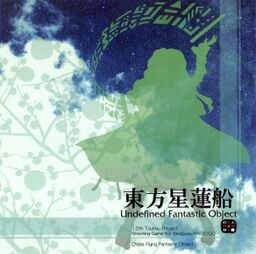

- Welcome to Touhou Wiki!
- Please register to edit. For assistance, check in with our Discord server or IRC channel.
Undefined Fantastic Object
Undefined Fantastic Object | |
|---|---|
|
 | |
| Developer | |
| Publisher | |
| Released |
Trial 0.01: March 8, 2009 |
| Genre |
Vertical Danmaku Shooting Game |
| Gameplay |
Single-Player Story Mode |
| Platforms | |
| Requirements |
|
| Official Site | |
Touhou
Gameplay[edit]
Undefined Fantastic Object features three playable characters (Reimu, Marisa and Sanae), each with two weapon types. Unlike Mountain of Faith and Subterranean Animism, the bomb system from earlier games such as Perfect Cherry Blossom and Imperishable Night has been reintroduced.
Undefined Fantastic Object's main gimmick lies in the colored UFOs. Certain enemies will release a UFO upon destruction, which the player can collect for different effects. By utilizing this system, the player can receive more bombs, life pieces, or point bonuses. Scoring generally involves timing UFO outbreaks well and utilizing point-based UFOs over the others.
Concept[edit]
Unlike previous games, which have focused mainly on giving the player a Shinto feeling, ZUN designed this one with Buddhism in mind from the very start. There are numerous references to Bishamonten throughout, as can be seen from Shou Toramaru and Nazrin's background stories and Ichirin Kumoi's clothing design.[2]
Aside from coming from a different religious angle, one of the major points of the game was to pay homage to Space Invaders - ZUN used to be an employee at Taito Corporation, the company whom originally developed the game; at the time, Taito was celebrating the 30th anniversary of Space Invader's in 2008, the year before the release of Undefined Fantastic Object. This influence was part of what went into the idea of UFOs being the main gimmick. It is also clearly shown in Stage 6, where the fairy stage enemies move in a back-and-forth pattern very reminiscent of the classic arcade game.[2]
There are also numerous subtle references to the PC-98 games; for example, the main character travels to Makai after Stage 4, and one of Byakuren's spell cards references one of Shinki's attacks in both pattern and name. Besides referencing older Touhou games, a few spell cards also borrow their names from other Taito games such as Bubble Symphony and Bubble Memories, and one other one references Radiant Silvergun, a shoot-'em-up developed by Treasure.
Name[edit]
The name "Undefined Fantastic Object" is a reference to the so-called Unidentified Flying Object.
Story[edit]
The story of Undefined Fantastic Object is about a strange flying object that appears in the skies of Gensokyo during the early springtime. The player character will, for whatever reason their shot type description says, launch off into the sky to unravel its mysteries, plunder its treasure, and generally get rid of youkai.
Upon reaching the Stage 4 boss, Minamitsu Murasa, the story begins to unravel. The objective of most of the enemies in the game is to free a human named Byakuren Hijiri from a sealed sleep of hundreds of years. Interestingly enough, every character besides Kogasa Tatara has an important role in the plot. Each with their own reasons, the enemies attempt to collect these UFOs - actually fragments of the "floating vault", Tobikura - the player has been collecting, but the player eventually unseals and faces Byakuren herself out of curiosity.
After the events of the main story, it is known that Byakuren and her followers erect a Buddhist temple in Gensokyo. However, in order to figure out what the UFO objects really were, the player later encounters Nue Houjuu, who reveals that she was the one aiding and obstructing both the player and enemy factions during the main story. The reason the fragments of Tobikura had been scattered was because she had placed Seeds of Unknown Form in them, and the reason they appeared to be UFOs was essentially because nothing else should be floating through the sky like that.
Music[edit]
Undefined Fantastic Object has 17 different tracks in it excluding the Player Score song, which can all be unlocked in the sound test by hearing them at least once in-game. Of all the different songs, ZUN specially noted the Stage 1 theme "At the End of Spring" (春の湊に), the final boss theme "Emotional Skyscraper ~ Cosmic Mind" (感情の摩天楼 ～ Cosmic Mind), and the extra stage theme "UFO Romance in the Night Sky" (夜空のユーフォーロマンス) as particularly important. [2] The staff roll theme "Returning Home From the Sky ~ Sky Dream" (空の帰り道 ～ Sky Dream) is an arranged version of "Emotional Skyscraper ~ Cosmic Mind".
According to ZUN, the stage 1 theme is always the first composed, so he put a lot of time into it in order to extensively test the game system; the introduction of At the End of Spring happens to include pieces of a song he wrote (and possibly never used) during his time at university. He also claims he sometimes thinks he worked way too hard on Emotional Skyscraper ~ Cosmic Mind, implying it may sound like he's trying to be cool. He says he had a fun time composing UFO Romance in the Night Sky, as well, because by that time the main game has been finished and he could "do something different". [2]
Press[edit]
Undefined Fantastic Object was originally announced on February 26, 2009, along with a few in-progress screenshots and a simple explanation of the game's story. [3] A trial was later released at Reitaisai 6 on March 8. A downloadable trial version, containing the finished versions of stages one through three, was released to the public on July 19, prior to the game's final release on August 15 at Comiket 76.
Shortly after the full release, on August 27, a patch was released to fix a scoring glitch and to slightly change the color of one UFO in order to make the game more accessible to colorblind individuals. An English-language patch for the full version was released on September 8, 2009 at Gensokyo.org[4], three days before the game was released in doujin stores across Japan.
In the February issue(volume 11) of the magazine Chara☆Mel, which has in the past serialized the Cage in Lunatic Runagate short stories, there was an interview with ZUN in the form of an attached DVD. During the interview, ZUN details the ideas and concepts that went into the creation of Undefined Fantastic Object, as well as character design specifics and his thoughts on the music. [2]
English patches[edit]
Touhou Community Reliant Automatic Patcher / THCRAP
- Community translations from the Touhou Patch Center wiki.
- Select lang_en during patching.
- Video walkthrough
- Also available as a pre-packaged standalone (not recommended).
These patches are a community translation based on Touhou Wiki and the English Touhou Patch Center Portal.
Visit the thpatch game page to find the specific patch contents for Undefined Fantastic Object.
External Links[edit]
Official[edit]
- Official website at Team Shanghai Alice
- Download page for trial version and 1.00b patch at Team Shanghai Alice
- Original article at Invisible Games and Japanese
- ZUN's interview with Chara☆Mel regarding Undefined Fantastic Object at Youtube
Unofficial[edit]
- English scoreboard at Shmups Forum
- English scoreboard at Maidens of the Kaleidoscope
- Japanese scoreboard at Royal Flare
References[edit]
- ↑ Double meaning in the title: "Seirensen" is also the pronunciation of "聖輦船" ("Palanquin Ship"), the ship that serves a major role in the game's story.
- ↑ 2.0 2.1 2.2 2.3 2.4 Chara☆Mel. "Interview with Chara☆Mel" (in 日本語). Unknown parameter
|accesdate=ignored (|access-date=suggested) (help) - ↑ ZUN. "記念すべき東方Project第１２弾 東方星蓮船" (in 日本語). kourindou.exblog.jp. Unknown parameter
|accesdate=ignored (|access-date=suggested) (help) - ↑ "UFO English Patch v1.0 Released!". Unknown parameter
|accesdate=ignored (|access-date=suggested) (help); Unknown parameter|purblisher=ignored (help)